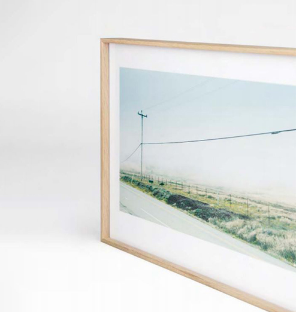
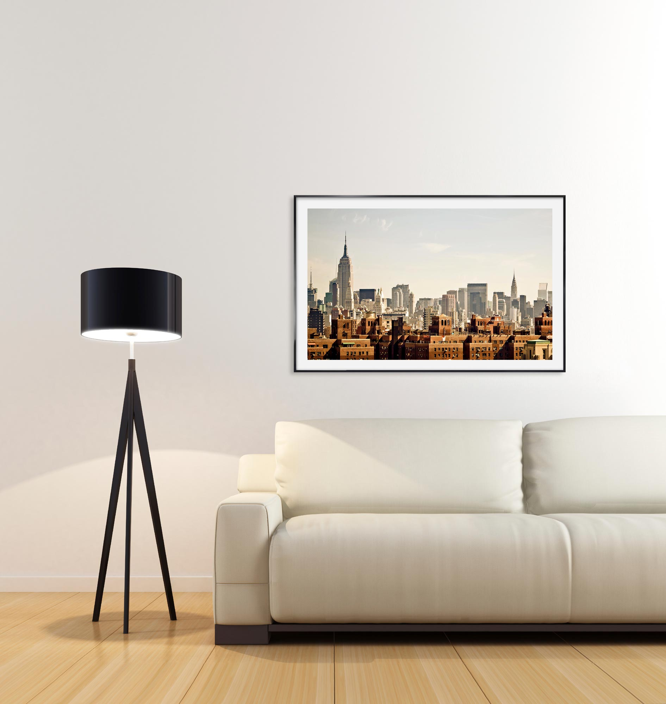

Cadres standards Nielsen au Luxembourg
Une qualité qui fait la différence : tous les cadres Nielsen, en aluminium comme en bois, sont réalisés avec des matériaux de grande qualité.

Click & Collect 1 h
Retrait à l'atelier Hollerich après commande en ligne.
Devis instantané
Configurez baguette, passe-partout et verre en direct.
Qualité Nielsen
Fabrication allemande, certification FSC sur les cadres bois.
Une qualité qui fait la différence
- Les cadres boisDes dorés aux couleurs vives en passant par les bois bruts : une large palette de styles.
- Les cadres aluminiumSimples à charger, démonter et remonter ; tournettes rivetées sur dos MDF, verre minéral 2 mm à chants polis, aucun risque de blessure.
- Conçus par Nielsen DesignLa certification FSC garantit une gestion responsable des forêts. La plupart de nos cadres bois sont éco-responsables.
- Fabriqués en AllemagneNielsen, marque de référence de l'encadrement : une expertise sur le cadre, le verre et le contrecollé.
Aluminium ou bois : comment choisir
Les cadres aluminium Nielsen se chargent et se démontent facilement. Ils conviennent aux affiches, photographies et séries que vous changerez. Le verre minéral 2 mm à chants polis évite les arêtes coupantes. Les cadres bois portent davantage le décor : chêne, couleurs, or, patines. La certification FSC concerne la filière bois. La fabrication reste allemande.
Un cadre Nielsen au format courant n'est pas un encadrement d'art sur mesure. Il ne remplace pas une Marie-Louise biseautée, une caisse américaine profonde, ni un montage d'objet. Si votre œuvre dépasse les cotes du configurateur, si le papier est fragile, ou si vous voulez un verre museum, nous basculons vers le sur-mesure à l'atelier.
Vous composez baguette, passe-partout et verre en ligne. Le prix s'affiche tout de suite. Le retrait se fait à Hollerich, souvent dans l'heure selon le stock. Nous desservons Luxembourg-Ville, Hollerich et Howald pour le retrait. La pose sur site dans un rayon de 25 km reste un service à part, plutôt lié aux commandes institutionnelles et aux grands formats.
Ce que vous emportez avec un cadre Nielsen
Un cadre standard Nielsen, c'est une coupe d'usine, un verre minéral, un fond MDF et une finition répétable. Nous le stockons et le préparons à l'atelier : ce n'est pas un colis anonyme. Vous pouvez changer l'affiche plus tard sans casser le cadre, surtout en aluminium. Le bois se prête mieux à un salon, une chambre, un cabinet où la baguette fait partie du décor.
Nous conseillons le standard quand le format existe, quand le budget doit rester lisible, et quand le délai compte (Click & Collect). Nous conseillons le sur-mesure quand l'œuvre a une valeur patrimoniale, un format irrégulier, ou quand le verre de conservation n'est pas une option. Les deux familles se retrouvent dans le même atelier, avec le même accueil mercredi au samedi.
Pour une série d'entreprise au format identique, le Nielsen reste souvent le bon outil : une référence, un devis en ligne, une livraison groupée. Pour un portrait officiel ou une pièce unique, nous ouvrons les échantillons de moulures. Si vous hésitez, écrivez-nous les cotes et une photo : nous vous disons franchement si le configurateur suffit ou s'il faut un rendez-vous.
L'atelier est à Hollerich. Vous composez en ligne, vous retirez sur place, vous repartez avec un cadre prêt à accrocher. Si le stock d'une baguette manque, nous vous prévenons et proposons une alternative Nielsen du même univers, ou un rendez-vous sur mesure. Les univers Nature, Color, Design et Charme couvrent le bois brut, la couleur, les lignes pures et les patines ; nous vous aidons à choisir si l'écran ne suffit pas. Certification FSC sur la plupart des bois, fabrication en Allemagne. Nous le conseillons, nous le préparons, nous ne le déguisons pas en sur-mesure.

